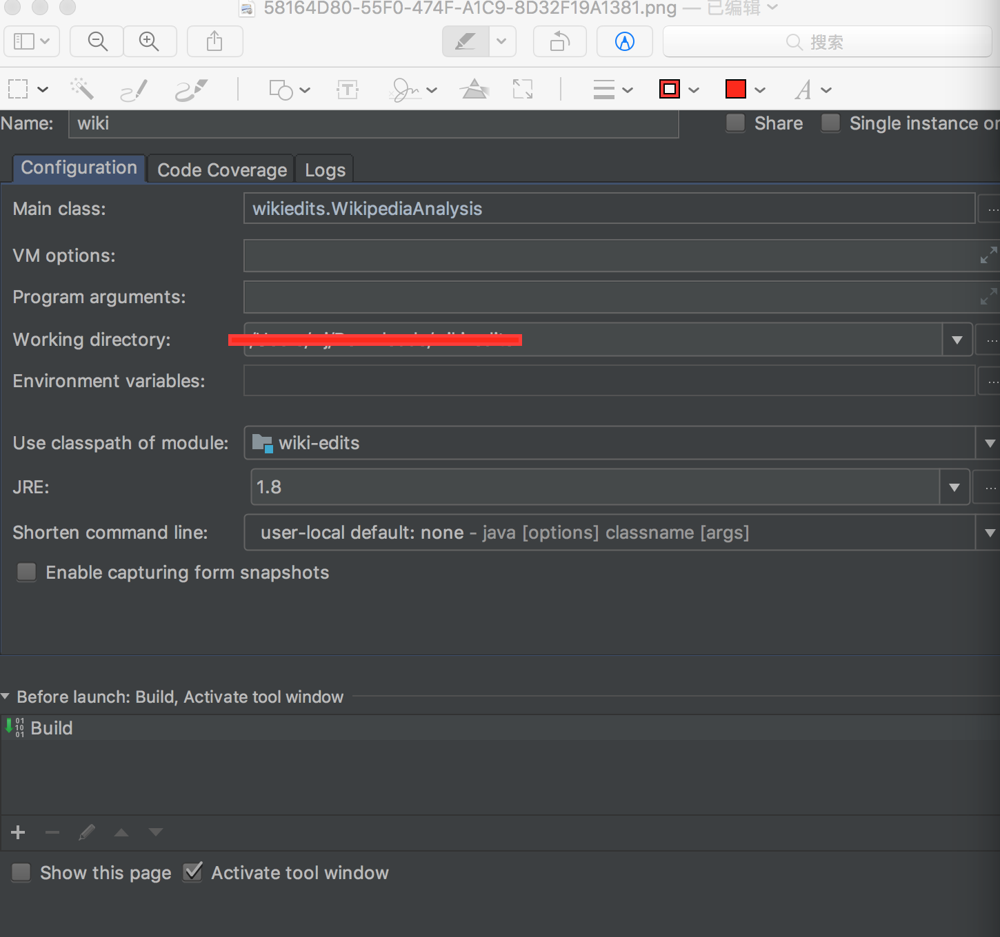

概览
wiki-edits教程是一个监控wikipedia编辑的flink监控程序，实时计算编辑者的编辑的byte数。它通过wikipedia connector来获取数据源，最终把数据sink到kafka中。
建立Maven工程
我们使用Flink的Maven原型来创建工程。Flink的版本号为1.5.0，脚本命令如下：
1
2
3
4
5
6
7
8
9
| $ mvn archetype:generate \
-DarchetypeGroupId=org.apache.flink \
-DarchetypeArtifactId=flink-quickstart-java \
-DarchetypeVersion=1.5.0 \
-DgroupId=wiki-edits \
-DartifactId=wiki-edits \
-Dversion=0.1 \
-Dpackage=wikiedits \
-DinteractiveMode=false
|
然后我们可以通过tree命令来查看目录结构。
1
2
3
4
5
6
7
8
9
10
| $ wiki-edits/
├── pom.xml
├── src
│ └── main
│ ├── java
│ │ └── wikiedits
│ │ ├── BatchJob.java
│ │ ├── StreamingJob.java
│ └── resources
│ └── log4j.properties
|
最后我们用IDEA打开工程，并在pom.xml中添加如下依赖，分别为对flink-connector-wikiedits和flink-connector-kafka的依赖。
1
2
3
4
5
6
7
8
9
10
| <dependency>
<groupId>org.apache.flink</groupId>
<artifactId>flink-connector-wikiedits_2.11</artifactId>
<version>${flink.version}</version>
</dependency>
<dependency>
<groupId>org.apache.flink</groupId>
<artifactId>flink-connector-kafka-0.8_2.11</artifactId>
<version>${flink.version}</version>
</dependency>
|
编写Flink程序
首先我们创建一个WikipediaAnalysis.java文件，并在main方法中添加如下代码。其大致步骤分为如下：
- 获取环境信息
- 为环境信息添加WikipediaEditsSource源
- 根据事件中的用户名为key来区分数据流
- 设置窗口时间为5s
- 聚合当前窗口中相同用户名的事件，最终返回一个tuple2<user，累加的ByteDiff>
- 把tuple2映射为string
- sink数据到kafka，topic为wiki-result
- 执行操作
keyBy(…)函数是用来分片数据源的，可以把相同key的放在一个task任务中执行。
timeWindow(…)函数默认使用tumbling windows。
这边聚合函数使用了Aggregation函数，替换了原先的fold函数(提示为deprecated)。
1
2
3
4
5
6
7
8
9
10
11
12
13
14
15
16
17
18
19
20
21
22
23
24
25
26
27
28
29
30
31
32
33
34
35
36
37
38
39
40
41
42
43
44
45
46
47
48
49
50
51
52
53
54
55
56
57
58
59
60
61
62
63
64
65
66
67
68
69
70
71
72
73
74
75
| package wikiedits;
import org.apache.flink.api.common.functions.AggregateFunction;
import org.apache.flink.api.common.functions.MapFunction;
import org.apache.flink.api.common.serialization.SimpleStringSchema;
import org.apache.flink.api.java.functions.KeySelector;
import org.apache.flink.api.java.tuple.Tuple2;
import org.apache.flink.streaming.api.datastream.DataStream;
import org.apache.flink.streaming.api.datastream.KeyedStream;
import org.apache.flink.streaming.api.environment.StreamExecutionEnvironment;
import org.apache.flink.streaming.api.windowing.time.Time;
import org.apache.flink.streaming.connectors.kafka.FlinkKafkaProducer08;
import org.apache.flink.streaming.connectors.wikiedits.WikipediaEditEvent;
import org.apache.flink.streaming.connectors.wikiedits.WikipediaEditsSource;
public class WikipediaAnalysis {
public static void main(String[] args) throws Exception{
StreamExecutionEnvironment env = StreamExecutionEnvironment.getExecutionEnvironment();
DataStream<WikipediaEditEvent> edits = env.addSource(new WikipediaEditsSource());
KeyedStream<WikipediaEditEvent, String> keyedEdits = edits
.keyBy(new KeySelector<WikipediaEditEvent, String>() {
@Override
public String getKey(WikipediaEditEvent wikipediaEditEvent) throws Exception {
return wikipediaEditEvent.getUser();
}
});
DataStream<Tuple2<String, Integer>> result = keyedEdits
.timeWindow(Time.seconds(5))
.aggregate(new AggregateFunction<WikipediaEditEvent, Tuple2<String, Integer>, Tuple2<String,Integer>>() {
@Override
public Tuple2<String, Integer> createAccumulator() {
return new Tuple2<>("",0);
}
@Override
public Tuple2<String, Integer> add(WikipediaEditEvent value, Tuple2<String, Integer> accumulator) {
return new Tuple2<>(value.getUser(), value.getByteDiff()+accumulator.f1);
}
@Override
public Tuple2<String, Integer> getResult(Tuple2<String, Integer> accumulator) {
return accumulator;
}
@Override
public Tuple2<String, Integer> merge(Tuple2<String, Integer> a, Tuple2<String, Integer> b) {
return new Tuple2<>(a.f0+b.f0, a.f1+b.f1);
}
});
result.map(new MapFunction<Tuple2<String,Integer>, String>() {
@Override
public String map(Tuple2<String, Integer> stringLongTuple2) throws Exception {
return stringLongTuple2.toString();
}
}).addSink(new FlinkKafkaProducer08<String>("localhost:9092", "wiki-result", new SimpleStringSchema()));
env.execute();
}
}
|
最后我们添加一下IDEA的运行配置信息。

安装运行zookeeper&kafka
Mac可以通过brew来安装zookeeper和kafka。
1
2
| $ brew install zookeeper
$ brew install kafka
|
然后运行上述组件。在zookeeper目录下执行以下命令来zookeeper开启服务。
在kafka目录下执行以下命令来开启kafka服务。
1
| $ ./bin/kafka-server-start /usr/local/etc/kafka/server.properties
|
接着创建一个topic。
1
| $ ./bin/kafka-console-producer --topic wiki-result --broker-list localhost:9092
|
运行程序并消费kafka中的数据
在IDEA中run刚才的程序，然后在kafka目录中执行开启消费者的命令，可以查看实时消费的数据。
1
2
3
4
5
6
7
8
9
10
| $ ./bin/kafka-console-consumer --zookeeper localhost:2181 --topic wiki-result
(Tony1,17)
(2.177.40.137,9)
(Waelabdelhamid,279)
(Falconatic,182)
(JackintheBox,1934)
(Zzbrandon123,26)
(0.86.42.171,56)
(.37.168.68,-44)
(Aditya debnath wiki,3)
|
总结
本文实践了Flink的wiki-edit例子。其通过从wiki-connector中获取source，并sink数据到kafka中。
参考
Monitoring the Wikipedia Edit Stream
kafka
zookeeper
Flink: How to convert the deprecated fold to aggregrate?